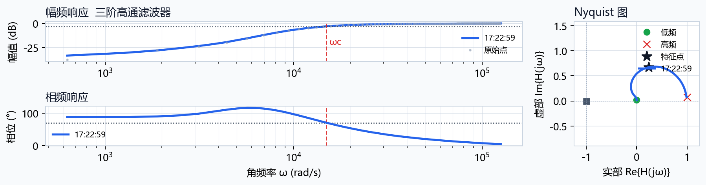

频响测量报告
导出时间：2026-06-14 17:22:59
扫频参数
| 时间 | 2026-06-14 17:22:59 |
|---|
| 来源 | 串口 |
|---|
| 串口 | COM13 |
|---|
| 波特率 | 115200 |
|---|
| 扫频命令 | SWEEP 100 20000 100 1.2
|
|---|
| 期望电路 | Auto |
|---|
| 点数 | 200 |
|---|
| 起始频率 Hz | 100.009 |
|---|
| 终止频率 Hz | 20000 |
|---|
识别结果与关键频率
| 识别结果 | 三阶高通滤波器 |
|---|
| 滤波类型 | highpass |
|---|
| 阶次 | 3 |
|---|
| 特征角频率 rad/s | 14938.9 |
|---|
| 特征频率 Hz | 2377.6 |
|---|
| 左截止 Hz | 2377.6 |
|---|
| 稳定性 | 奈奎斯特判据显示闭环稳定，且稳定裕度较好。 |
|---|
结构化诊断
| 判定 | 三阶高通系统 |
|---|
| 置信度 | 0.97 |
|---|
| Top3 | highpass/3阶 0.97 / highpass/2阶 0.71 / highpass/1阶 0.69 |
|---|
| 关键频率 | 截止频率 1084 Hz |
|---|
| 测量质量 | 无削顶；输入RMS中位数 0.4240 V；输出RMS中位数 0.4150 V；PA1 DC约 1.664 V |
|---|
| 故障证据 | 暂未触发故障知识库规则 |
|---|
| 下一步建议 | 围绕高通截止频率 1084 Hz 加密扫频，建议命令 SWEEP 650 2710 100 0.6。 |
|---|
传递函数
| 表达式 | H(s) = (0.921s^3) / (s^3 + 1.362e+04s^2 + 9.280e+07s + 3.161e+11) |
|---|
| 参数 | K=0.921, fc=1.08e+03 Hz, wc=6812 rad/s |
|---|
| 分子系数 | 0.920961, 0, 0, 0 |
|---|
| 分母系数 | 1, 13623.3, 9.27975e+07, 3.16052e+11 |
|---|
测量质量、故障建议与报告行
=== 稳频仪：滤波器频响识别分析报告 ===
系统类型: 三阶高通滤波器
滤波器族: 高通滤波器
估计阶次: 3
判阶可靠性: 可靠（置信度 0.96）
期望电路: Auto
期望匹配: 未指定期望电路，按自动识别结果验收。
数据点数: 200
截止/特征判据: -3 dB cutoff
--- 识别证据 ---
幅频斜率证据: 低频端 30.3 dB/dec，高频端 0.2 dB/dec。
幅值跨度: 33.3 dB。
相位跨度: 83.8°。
相位延迟补偿: 未触发。
--- 测量质量诊断 ---
High-pass magnitude fit prefers order 1; magnitude RMSE = 1.58 dB.
High-pass transition-band fit prefers order 3; ignored 6 points below -20 dB and got RMSE = 0.24 dB.
测量质量: 输入RMS中位数 0.4240 V，输出RMS中位数 0.4150 V。
峰峰值: 输入P-P中位数 1.2010 V，输出P-P中位数 1.1725 V。
削顶频点统计: PA0 0 个，PA1 0 个。
测量偏置: PA0 DC≈1.647 V，PA1 DC≈1.664 V。
重复采集幅值稳定性: 中位跨度 0.012 dB，最大跨度 2.020 dB。
重复采集相位稳定性: 中位跨度 0.0020 rad，最大跨度 0.0460 rad。
-3 dB 截止角频率 = 14938.93 rad/s
特征频点相位 = 70.41 °
幅频阈值 = -2.98 dB
最大/通带幅值 = 1.0034 (0.03 dB)
=== AI辅助电路识别与智能诊断报告 v2 ===
智能识别: 三阶高通系统
判定策略: 传统频响分析为主判据：filter_analysis 已可靠判定为三阶高通系统（置信度 0.96），AI用于传递函数拟合、故障证据链和主动补扫建议。
置信度: 0.97
关键频率: 截止频率 1084 Hz
候选排名: 三阶高通系统 0.97 / 二阶高通系统 0.71 / 一阶高通系统 0.69
模型拟合: 高通3阶模板: fc=1084.1 Hz, R2=0.724；RMSE=2.87 dB, 最大残差=25.28 dB；参数={gain_db=-0.715, fc_hz=1.08e+03}
等效传递函数: H(s) = (0.921s^3) / (s^3 + 1.362e+04s^2 + 9.280e+07s + 3.161e+11)；K=0.921, fc=1.08e+03 Hz, wc=6812 rad/s；num=[0.921, 0, 0, 0]；den=[1, 1.362e+04, 9.280e+07, 3.161e+11]
测量质量: 无削顶；输入RMS中位数 0.4240 V；输出RMS中位数 0.4150 V；PA1 DC约 1.664 V
故障证据链: 暂未触发故障知识库规则
可能故障原因: 暂未发现明显硬件故障，优先按关键频率附近补扫确认。
下一步测试建议: 围绕高通截止频率 1084 Hz 加密扫频，建议命令 SWEEP 650 2710 100 0.6。
一键补扫计划: SWEEP 650 2710 100 0.6 (围绕高通截止频率 1084 Hz 加密扫频)
补扫SWEEP建议: SWEEP 650 2710 100 0.6
关键特征: 低频-20.9 dB，高频-0.1 dB，低频斜率34.6 dB/dec，高频斜率-0.2 dB/dec，相位跨度84.6 deg，Nyquist到(-1,0)最小距离0.919
备注
无
Bode / Nyquist 图

附件
{kind=link}